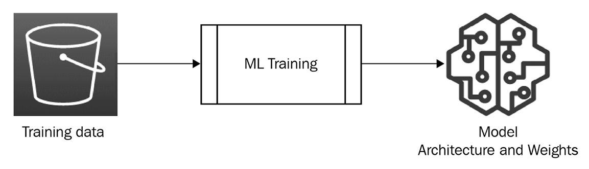
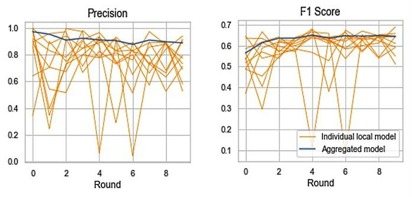
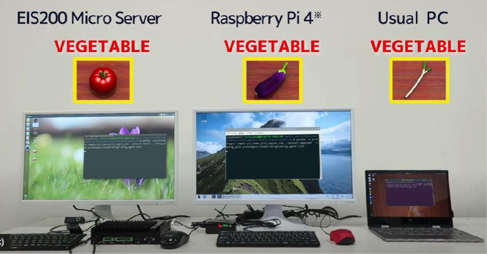
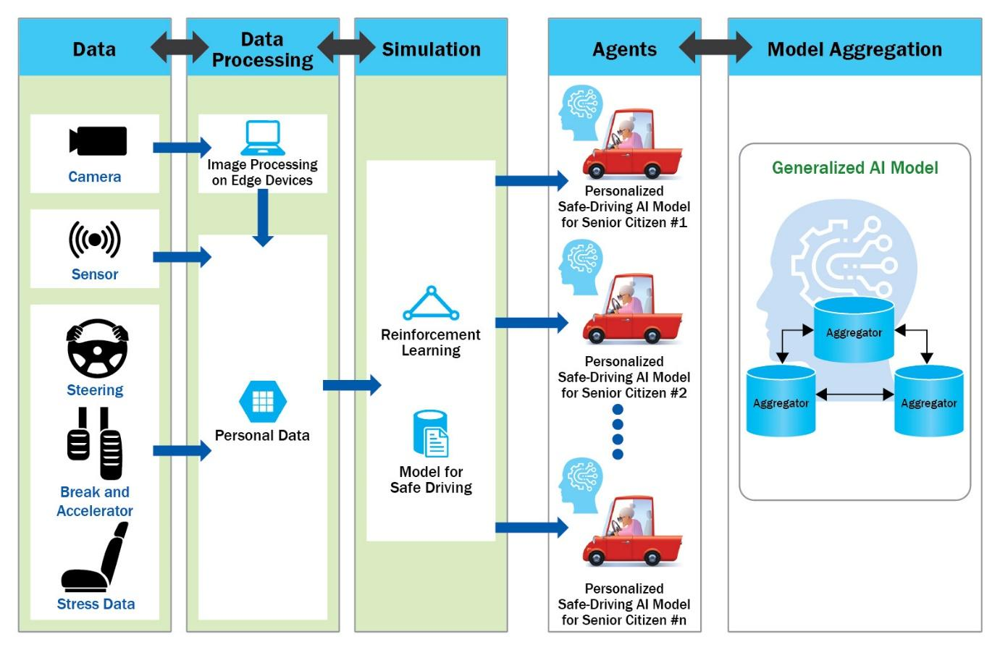
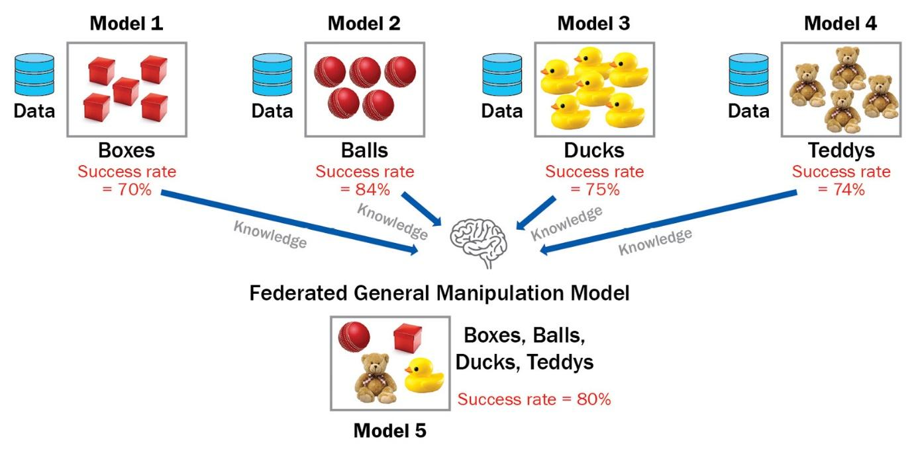
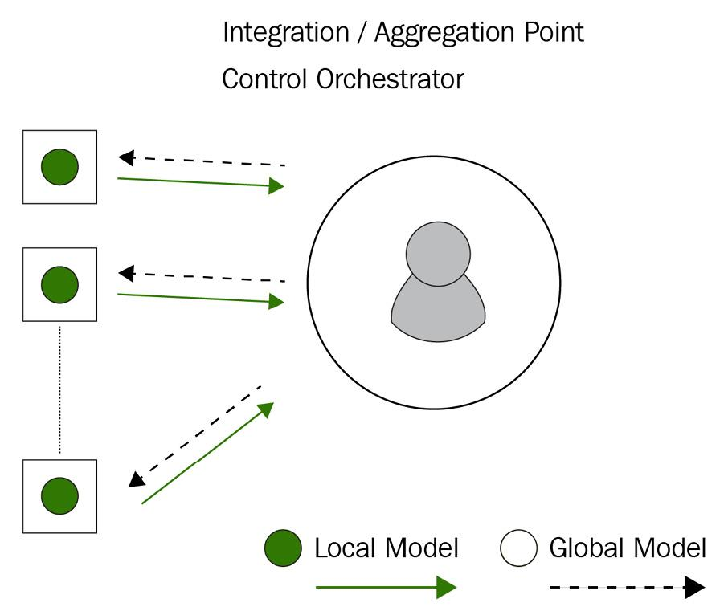

17 Federated Learning Use Cases and Case Studies
Case Studies with Key Use Cases of Federated Learning Applications
-
Federated learning (FL) has met with a variety of AI applications so far in various contexts and integration has been explored with trials and errors in those fields. One of the most popular areas has been in the medical and healthcare fields where the concept of privacy-preserving AI naturally fits with the current needs and challenges of healthcare AI.
-
FL has also been applied to the financial services industry, edge computing devices, and the Internet of Things (IoT), through which FL has been shown to have significant benefits in quite a few applications, which will resolve many important social problems.
-
Here, we will be discussing some of the major use cases of FL in different fields. It is our hope that by the end of This section, you'll be familiar with some of the applications of FL in different industries.
-
We\'ll start by exploring the use of FL in the healthcare and financial industries before making the transition to the edge computing and IoT sectors. Finally, we will conclude the section by discussing the intersection of FL and distributed learning for big data.
-
Here, we will cover the following topics:
-
Applying FL to the financial sector
-
FL meets edge computing
-
Moving towards the Internet of Intelligence
-
Applying FL to distributed learning for big data
Applying FL to the healthcare sector
-
FL used in healthcare is a topic that gained quite a lot of attention in the last couple of years. Healthcare advances can have an enormous effect on our lives.
-
However, several challenges make these advances perhaps more difficult than in other domains. Let's begin by discussing some of the common challenges that exist and are preventing the further development of AI in healthcare.
Challenges in healthcare
-
One of the primary challenges is data accessibility.
-
Data accessibility is not an issue unique to healthcare. It is a huge problem across the AI industry and will only become a greater challenge as time goes on.
-
It is a core problem in the development of AI in healthcare and we will touch briefly on some of the reasons why it is an issue here. We will also continue to revisit this major hurdle, addressing problems and solutions from many different angles and applications.
-
This strategy will allow you to understand the many different aspects, complexity, and drivers of the problem.
-
The data accessibility problem has many components:
-
Lack of data/need for real data: Few areas hold as much promise for providing a positive societal impact as healthcare does. Yet, the healthcare industry has fallen far behind in capitalizing on all of the many benefits that AI has to offer. One reason for this is that for AI and ML models to learn effectively, they need large amounts of data. We'll discuss more on the need for large amounts of data throughout This section. This is the limiting factor for AI. In healthcare, there are many regulations in place that prevent these models from utilizing the data in any way, and rightfully so.
-
Many data types from many places: As we'll discuss further, there are many different data types from many different places. Data can be in the form of text, video, images, or speech, which is stored in many different places. Aside from the ability to access data from many different locations, which is a major challenge on its own, these institutions store data in various formats as well.
- Let's start by taking a closer look at how FL is being used in medical imaging.
Medical imaging
-
There is a lot of optimism surrounding FL in the medical imaging space as discussed in A Comprehensive Analysis of Recent Deep and Federated-Learning-Based Methodologies for Brain Tumor Diagnosis, which is listed in the Further reading section Here.
-
These high expectations are, in part, due to some of the challenges that need to be addressed and the capability of FL to overcome these hurdles. One of these challenges is needing large amounts of data.
-
Large amounts of medical imaging data are created every day as the medical imaging industry continues to develop better equipment, procedures, and facilities. The exponential growth of this data is a huge opportunity for healthcare providers to develop better ML models and increase the quality of healthcare.
-
Another reason for the optimism around FL having a positive impact on medical imaging is the already proven success of machine learning (ML) -- more specifically, deep learning (DL).
-
Let's take a brief look at DL to understand better why it is so important when dealing with large amounts of data. DL is a subspace of ML encompassed by the AI umbrella.
-
DL is different from ML in that it uses several layers of what are known as neural networks. Several books have been written on DL and neural networks as a singular subject, so we won't attempt to explain these in greater detail in this book. For more in-depth coverage of DL and neural networks, Advanced Deep Learning with Python is a great book to read.
-
For our general discussion, we'll provide a very basic explanation.
-
The following figure, Figure 9.1, shows a simple example of a neural network being used to help classify types of brain tumors using medical imaging:
{width="6.268055555555556in" height="3.765277777777778in"}
Figure 9.1 -- Tumor classification with a neural network
-
On the left-hand side of the figure, we have an image of a brain that has one of two types of tumors. The image is broken down into numbers that represent the image pixels.
-
These numbers are added to the neural network. The hidden layers utilize different weights for these numbers and produce different outputs through activation functions. Finally, we can see the two output layers. In this case, there are two possible outputs. One is Tumor is Type 1 and the other is Tumor is Type 2.
Single location data is limited
- As you can see, DL models require a lot of data to train. Generally, a single data repository has only a small amount of data, limiting the ability of any model to generalize well.
Possible solutions to data accessibility challenges
-
One solution is to utilize privacy-preserving FL, which can make use of all the data available in multiple centers while keeping sensitive data private.
-
FL enables the deployment of large-scale ML models trained in different data centers without sharing sensitive data.
-
In FL, rather than moving the data to the model to be trained, we move the model to the data and only bring back the intelligence gathered from the data, referred to as Intelligence from Data (IfD), discussed later in the Potential of IfD section in This section.
Example use case -- ML in hospitals
-
Let's walk through an example of how FL could be applied to medical imaging data. This example is actually what was done in an international challenge focused on brain tumors. The goal here is to segment the tumor using MRI scans.
-
For this example, we're going to use three hospitals. We will label them Hospital A, Hospital B, and Hospital C. Each hospital has anonymized private medical imaging data that is stored locally. Each hospital begins with a learning model, which you can see in the following diagram:
{width="6.268055555555556in" height="5.235416666666667in"}
Figure 9.2 -- Hospitals sharing ML models for FL
-
Each hospital runs the model locally; this creates what is referred to as a local model. It's important to note that each one of the hospital's local models will be different at this point. Each of them has only trained on the data that resides at their hospital.
-
The intelligence from training these three local models is sent to a centralized server in the form of model parameters. The server gathers the local models and combines them to create a global model. This global model, a combination of the intelligence from all three local models, is then sent back to each hospital and is again trained locally only on that hospital's data.
-
Again, only the intelligence from these models is sent back to the server for aggregation. This process is repeated until the model has learned all it can (known as convergence).
-
Utilizing FL, you can train models that perform as if all the data came from a single location even when data resides at different locations. As you can see, the implementation of privacy-preserving methods such as this one has the power to revolutionize the field of medicine.
-
Let's now take a look at how FL can improve the drug discovery space.
Drug discovery
- Data has become somewhat of a new currency in our modern world. For pharmaceutical companies, especially, the use of this data to provide personalized medicine has become a major focus. In the years ahead, companies that can make use of more data will be far more competitive. This will be one of the defining strategies for the future success of any organization.
Precision medicine
- Personalized medicine, also known as precision medicine, relies heavily on large amounts of real-world data to make this possible. In addition, ML algorithms are needed to process and analyze this data in order to extract meaningful insights. As we will discuss, accessing significant amounts of real data is currently very difficult, if not impossible.
{width="6.268055555555556in" height="6.09375in"}
Figure 9.3 -- Precision medicine impacting many areas
- As you can see from Figure 9.3, precision medicine covers a vast area of different fields and disciplines, such as oncology, wellness, diagnostics, research, and health monitoring.
 {width="5.467361111111111in"
height="4.206944444444445in"}
{width="5.467361111111111in"
height="4.206944444444445in"}
Figure 9.4 -- Precision medicine now
- It's easy to imagine the immense cost of moving data from many hospitals into one centralized place in this fashion. Processing data in this way also compromises data security and makes regulatory compliance difficult, if not impossible.
{width="5.177777777777778in" height="3.7395833333333335in"}
Figure 9.5 -- Precision medicine with FL
- The FL approach allows for efficient model transfers and data security while being compliance-friendly.
Potential of IfD
-
Utilizing FL to gain access to real-world data has huge potential to improve all of the clinical research stages. Accessing this kind of data allows us to utilize the intelligence gathered and IfD can dramatically accelerate the processes and steps in drug discovery.
-
One important idea to keep in mind when discussing how FL works is that the training data never leaves the device.
{width="6.268055555555556in" height="1.8090277777777777in"}
Figure 9.6 -- An IfD diagram
- As you can see in Figure 9.6, the data is used locally to train the ML model. In FL, the model is located on the device itself, where it is trained, and only the model weights are sent for aggregation -- so only the intelligence from the data, not the data itself.
 {width="6.268055555555556in"
height="4.642361111111111in"}
{width="6.268055555555556in"
height="4.642361111111111in"}
Figure 9.7 -- A generalized view of how FL collects IfD
-
As shown in Figure 9.7 here, all the data remains isolated within each organization and is not transferred to the federated server.
-
Let's now move forward and discuss an FL application with EHRs.
EHRs
- An EHR is a collection of health information that is systematically and digitally stored. These records are designed to be shared with healthcare providers (HCPs) when appropriate. According to HealthIT.gov statistics, as of 2017, 86% of office-based physicians have adopted EHRs in the United States.
{width="6.268055555555556in" height="4.810416666666667in"}
Figure 9.8 -- EHRs
- This adoption of EHRs has laid the groundwork for beneficial collaboration between healthcare organizations. As we've discussed throughout the book, the ability to access more real-world data allows AI models trained on this data to be much more robust and effective.
-
These include privacy concerns and regulations as well as data standardization.
-
One of the major problems is the storage of this data in Central Data Repositories (CDRs), as shown in Figure 9.9, where various forms of local data are stored to be trained to create an ML model.
 {width="6.268055555555556in"
height="2.834722222222222in"}
{width="6.268055555555556in"
height="2.834722222222222in"}
Figure 9.9 -- A centralized data mining method
- This CDR approach is not ideal because of the data isolation problem, which is discussed in the following section.
The data isolation problem
- The use of CDRs for data storage brings many problems. Some examples include things such as data leakage, hefty regulations, and a high cost to set up and maintain.
Representation learning in EHRs
- Researchers have applied FL to representation learning in EHRs as mentioned in the Further reading list such as Two-stage federated phenotyping and patient representation learning.
Applying FL to the financial sector
-
In the US alone, financial services firms spend billions of dollars every year on compliance to combat laundering, yet the current system is so ineffective that less than 1% of money laundering activities are thwarted. In fact, it's estimated that firms spend roughly 100 times more money than they are able to recover from this criminal activity.
-
Only a small percentage of transactions are caught by anti-money laundering (AML) systems, and an even smaller percentage of those alerts are eventually reported in suspicious activity reports (SARs), as required by the Bank Secrecy Act (BSA) of 1970.
Anti-Money Laundering (AML)
- The current AML system needs major improvements, with several challenges that need to be overcome. Many privacy regulations are in place to protect personal financial data. These regulations vary from institution to institution and region to region.
- This would allow only the IfD to be shared and benefit each collaborator that could utilize the intelligence gathered. As we've discussed, FL has this capability.
- Another approach is to share some kind of identifier as necessary. However, again due to privacy laws and regulations, this is not possible and could only be used as part of an investigation process.
Proposed solutions to the existing AML approach
- The development of FL approaches across AML disciplines includes the essential topic of customer onboarding and it may help to use non-traditional information to verify the identities of potential customers.
-
Enhance the ability of firms to identify accurately real risks and reduce unfounded risk reporting
-
Improve the risk-reward calculi of firms when making decisions about whether to serve specific markets
- The second key factor is the regulatory risks and reputational impact for financial firms connected to illicit financial activities
 {width="6.268055555555556in"
height="4.373611111111111in"}
{width="6.268055555555556in"
height="4.373611111111111in"}
Figure 9.10 -- Institutional reporting of suspected illicit activity
- Institutions won't necessarily know about patterns their competitors are picking up or what the government knows about which transactions flagged are suspicious or genuine. Firms get little timely feedback on the accuracy of the reports they submit. The result is that firms lack the most vital information for improving their risk detection capabilities: timely information about confirmed problems.
-
Powerful computers combined with smart algorithms could be deployed to evaluate data at different institutions.
-
The ML model that has learned the risk patterns would then move between the participating firms to pick up the patterns and learn from the risk at each institution. All of this could be done without sharing sensitive or protected data.
-
This is depicted in Figure 9.11:
 {width="6.268055555555556in"
height="4.429861111111111in"}
{width="6.268055555555556in"
height="4.429861111111111in"}
Figure 9.11 -- The data and intelligence flow within a banking ecosystem
-
In the FL approach, the bank creates a classification algorithm that trains on each participating firm's data.
-
The bank develops a key model and model parameters that reflect insights from all participating firms and the data in the government's possession.
-
The bank distributes the key model and model parameters to the participating firms while the data stays in each institution. These distributed models adopt the risk patterns in those firms by learning from their local data and then sending them back to the bank.
Demo of FL in the AML space
-
The researchers at TieSet, Inc. have conducted an experiment of applying FL to the AML space over STADLE, using some synthetic transaction data generated by the PaySim mobile money simulator ([https://www.kaggle.com/ealaxi/paysim1]{.underline}).
-
They have used supervised learning with logistic regression where model features include time, amount, and the new and old balance of the original account and the destination account.
-
The dataset has 636,2620 transactions (8,213 fraud transactions and 635,4407 valid transactions), which are split into 10 separate local agents.
-
Figure 9.12 is the outcome of applying FL to AML where the precision score and F1 score are plotted at each round of training. In the figure, the thicker line is the performance of the aggregated model, and the thin lines are the results of individual agents training separately only using local data:
{width="6.268055555555556in" height="3.0034722222222223in"}
Figure 9.12 -- Outcome of applying FL to AML (thicker line: aggregated model, thin lines: individual agent training separately)
-
As in Figure 9.12, the aggregated model performs in a quite stable manner, constantly achieving more than 90% in terms of precision and F1 score. FL could reduce the fraud transactions down from the total fraud transactions of $1,241,770,000 to $65,780,000, meaning only 5.3% of fraud transactions are missing.
-
Let's conclude this section by looking at a list of benefits that FL provides for risk detection.
Benefits of FL for risk detection systems
- There are several benefits in financial sectors for applying FL to risk detection systems as follows:
-
Improved accuracy of illicit activity detection
-
Provides a way for organizations to collaborate
-
Firms can enter new markets
-
The solutions and advantages that FL brings to the finance industry are numerous. Additional advantages include better operational efficiency and better allocation of human capital.
-
There is no limit to the application of FL, especially in the financial space, due to the ability to extract intelligence from client data.
-
We'll now be switching gears a bit as we move on to discussing the use of FL in several emerging technologies in the following section.
FL meets edge computing
-
The section in this section is a mixture of different areas, some of which are emergent technologies.
-
These areas are all very interconnected, as we will cover. Many of these technologies depend on one another to overcome their own challenges and limitations.
-
Combining these technologies alongside FL is an especially potent combination of technology that is sure to be key to advancements and innovation in the coming years.
-
We will see an exponential increase in both the amount of data and the speed at which it is transmitted.
-
We will continue to see more privacy regulations put in place to protect private user data and an explosion in the automation and analytics areas.
Edge computing with IoT over 5G
-
The foundation for realizing the full potential of smart devices is only possible if these devices are able to connect with a much-improved network, such as 5G.
-
In fact, by the end of 2023, it is expected that there will be 1.3 billion subscribers to 5G services worldwide. Alongside edge computing, 5G networks are essential for IoT connectivity. Combining these technologies will help pave the way for smart devices.
-
Figure 9.13 depicts a variety of things, with edge computing capability connected to the cloud and data centers within an IoT framework:
 {width="6.268055555555556in"
height="4.565277777777778in"}
{width="6.268055555555556in"
height="4.565277777777778in"}
Figure 9.13 -- Edge computing and the Internet
-
Many of these IoT devices, however, lack adequate security capabilities. In addition to laws and regulations such as the General Data Protection Regulation (GDPR), we can also expect additional policies to be implemented to protect user data. Essentially the need for a solution that extracts IfD will continue to build as more time passes.
-
Let's take a look at an example of FL applied to edge computing.
Edge FL example -- object detection
- Edge computing is an architecture that uses distributed computing to bring computation and data storage as close to the sources of data as possible. Ideally, this should reduce latency and save bandwidth. Here's an example of how FL can be utilized with different types of edge devices.
Technical settings
-
In this example, three devices were used to demonstrate object detection with FL using edge devices.
-
One was an EIS200 edge microserver that ran on Nvidia's Jetson with an Ubuntu OS.
-
The second device was a Raspberry Pi, using Raspberry Pi OS, and the third device was simply a regular PC, whose OS was Ubuntu as well. These machines individually trained an object detection model with unique datasets.
How to do it
-
The EIS200 trained on pictures of fish, meat, and tomatoes with the labels fish, meat, and vegetable. The Raspberry Pi trained on pictures of fish, meat, and eggplants. Evidently, here, tomatoes were replaced with eggplants.
-
The labels, however, remained the same -- fish, meat, and vegetable. Likewise, the regular PC trained on pictures of fish, meat, and leeks, still with the labels fish, meat, and vegetable.
-
As you would expect, each environment had biased data containing different vegetables -- as in, tomatoes, eggplants, and leeks -- with an identical label, vegetable, for all of them.
How it works
-
First, the model was trained with pictures of tomatoes by EIS200. As you would expect, only tomatoes were correctly labeled as vegetables, whereas eggplants and leeks were mislabeled.
-
In the same manner, the Raspberry Pi's model trained with pictures of eggplants only identified eggplants correctly. One of the two leeks was labeled as a vegetable as well, but the other one was identified as fish. As expected, the regular PC's model only identified leeks as vegetables.
-
None of the three agents could label all three vegetables correctly, as we would have anticipated. Next, they were connected to an FL platform called STADLE, developed by TieSet, Inc:
{width="6.268055555555556in" height="3.2736111111111112in"}
Figure 9.14 -- Demo of detecting tomatoes, eggplants, and leeks using FL where the distribution of the datasets is different on each machine
-
The STADLE aggregator was run as an instance in AWS. Here, again, each environment had a uniquely biased dataset containing only one type of vegetable.
-
Connected with the STADLE platform, each agent trained with local data. After several training epochs, the weights of the models were sent from the agents to the aggregator.
-
Those weights were then aggregated and sent back to the agents to continue training. The repetition of this aggregation cycle generated unbiased weights.
Examining the results
- The FL model was able to detect and label all three types of vegetables correctly as in Figure 9.15. This is a straightforward example of the power of FL in terms of bias elimination:
{width="6.268055555555556in" height="3.8965277777777776in"}
Figure 9.15 -- Results of the demo using three edge devices
-
As mentioned previously, all of the model training took place at the local storage of the edge device itself.
-
The model trained on the local data and then only sent the parameter weights to the federated server for aggregation.
-
The federated server averaged the model. If you recall from earlier sections, this is called FedAvg.
-
The federated server then sent back the improved and updated model to the edge device. So, again, only IfD is collected, not the data itself.
-
Now, let's look at another edge example in the automotive sector in the following section.
Making autonomous driving happen with FL
-
Edge computing with ML gains significant interest in AI industries at scale, especially in the automotive field. Use cases such as autonomous driving require low latency and real-time responses to operate correctly. Therefore, FL becomes one of the best solutions for the automotive field in terms of distributed data processing and training.
-
Offloading computation and storage to edge IoT devices makes the cloud systems for managing autonomous driving applications much smaller and cheaper. That's the most powerful benefit of moving on to the FL paradigm from central cloud-based ML.
-
Modern cars already have edge devices with complex computing capabilities. Advanced Driver Assistance Systems (ADASs) are the essential functions for autonomous cars where calculations happen onboard. They also require significant computation power.
-
The model is trained and prepared using regular, costly training systems within on-premises servers or in the cloud even if the prediction happens in the autonomous vehicle.
-
The training process will become more computationally expensive and slower if the data becomes bigger and will require significant storage as well.
-
FL needs to be used to avoid those issues because updated ML models are passed between the vehicles and the server where the car stores the user driving patterns and streaming images from the onboard camera. FL, again, can work in accordance with user consent and adherence to privacy and regional regulations.
-
Figure 9.16 is about decentralized FL with multiple aggregators to improve ADASs for safe driving, conducted as a real use case by TieSet, Inc. with its technological partner:
{width="6.268055555555556in" height="4.0777777777777775in"}
Figure 9.16 -- Decentralized FL with multiple aggregators to improve ADASs for safe driving
-
The ADAS integrated into the STADLE of TieSet, Inc., tailored to provide comfort and personal safety measures, especially to senior citizens, delivered optimized steering controlling assistance for car products.
-
Via advanced computer vision and Reinforcement Learning (RL) technologies, they achieved a design that provides prompt danger situation awareness and intelligently learns about the best-personalized driving strategies.
-
While personalization is a principal focus of the design, substantial privacy issues come with personal data usage. The FL framework enabled by the STADLE platform provided a realistic solution to overcome this barrier.
-
The architecture, presenting a collaborative form of ML training distributed among edge users via AI intelligence exchanges, avoids data transferal and ensures data privacy.
-
Furthermore, the aggregated models can cope with various risky and unpredictable situations beyond the personal experience of drivers.
-
During the proof of concept using real cars, they successfully demonstrated that the designed RL model could efficiently generate the desirable steering strategy customized for the drivers using STADLE's aggregation framework.
-
In the following section, we will talk about how FL could be applied to the robotics domain.
Applying FL to robotics
-
In robotics systems and applications, ML has already become an integral and essential part of completing necessary tasks. Computer vision has evolved to make robotics systems perform very well for many tasks, such as image segmentation and object detection and classification as well as NLP and signal processing tasks.
-
ML can handle many robotics tasks, including perception, path planning, sensor fusion, and grasping detected objects in manufacturing settings.
-
However, ML in robotics also has many challenges. The first is the training time. Even when the amount of data is enough to train the ML models to solve the aforementioned problems, it takes weeks or months to train an authentic robotics system.
-
Equally, if the data is not sufficient, it can restrict the ML model performance significantly. Often, data privacy and accessibility become an issue for collecting enough data to train the ML models for the robots.
-
That is why the FL framework is considered an essential solution to the domain of robotics.
-
Researchers at TieSet, Inc. developed a system and methods that allow robotic manipulators and tools to share their manipulation skills (including reaching, pick-and-place, holding, and grasping) for objects of various types and shapes with other robots, as well as use the skills of other robots to improve and expand their own.
-
This system covers the methods to create a general manipulation model for robots that continuously improves by crowdsourcing skills from various robotic agents while keeping the data private.
-
They propose a new architecture where multiple AI-powered robotic agents collaboratively train a global manipulation model by submitting their models to an aggregator. This communication enables each agent to utilize the training results of the agents by receiving an optimally updated global model.
-
Figure 9.17 is the architecture showing how the federated crowdsourced global manipulation framework for robotics works:
 {width="6.268055555555556in"
height="5.684027777777778in"}
{width="6.268055555555556in"
height="5.684027777777778in"}
Figure 9.17 -- Architecture of the federated crowdsourced global manipulation framework for robotics
-
Based on the architecture of the preceding figure, in the simulation settings, they prepare five robotic arms for the individual tasks of grabbing boxes, balls, ducks, and teddies.
-
Using the STADLE platform by TieSet, Inc., which can conduct asynchronous FL, the ML models from those arms are aggregated continuously. In the end, the federated robotics ML model can grab all these objects, whether boxes, balls, ducks, or teddies, with a higher performance (an 80% success rate) in grabbing those objects, as seen in Figure 9.18:
{width="6.268055555555556in" height="3.0875in"}
Figure 9.18 -- Arm robots can cross-train with different tasks for accuracy and efficiency
-
The FL based on STADLE could significantly reduce the time taken to train robots and ML for production lines using computer vision. Federated performance is much better than training individual robots and the learning time is much faster than when training individual robots.
-
In the following section, we will talk about AI at scale, where learning should constantly happen even with numerous devices with connected environments and the IoT should evolve into the Internet of Intelligence.
Moving toward the Internet of Intelligence
-
In this section, we will talk about why FL is quite important in the context of the latest development of scalable technologies, such as the IoT and 5G.
-
As in the previous section, the areas in which AI needs to keep learning at scale include autonomous driving, retail systems, energy management, robotics, and manufacturing, all of which generate a huge amount of data on the edge side, and most of the data needs to be fully learned to generate performant ML models.
-
Following this trend, let us look into the world of the Internet of Intelligence, in which learning can happen on the edge side to cope with dynamic environments and numerous devices connected to the Internet.
Introducing the IoFT
-
The IoT involves intelligent and connected systems. They are intelligent because the information is shared and intelligence is extracted and used for some purpose -- for example, prediction or control of a device. They are often connected to the cloud and are able to collect data from many endpoints.
-
Figure 9.19 shows the current IoT system with more and more data over time:
{width="6.268055555555556in" height="3.9027777777777777in"}
Figure 9.19 -- A current IoT system
-
As shown in Figure 9.19, in the current IoT flow, large amounts of data must be uploaded and stored in the cloud.
-
The models train for specific purposes, such as predictive maintenance and text prediction. Finally, the trained models are sent back to the edge devices.
-
As you can see, there are several issues with the current approach:
-
Latency is affected due to the amount of data
-
Privacy issues due to the movement of data
-
The Internet of Federated Things (IoFT) is an idea originally presented by researchers at the University of Michigan, whose paper The Internet of Federated Things (IoFT) is listed in the Further reading section of This section. The IoFT is an extended framework combining IoT with the concept of FL.
-
As the computational power on the edge side has improved significantly, AI chips have been penetrating the market rapidly. Even smartphones have a really strong computing capability these days and small but powerful computers are often attached to most edge devices.
-
Therefore, the ML model training process is brought down to the edge due to the increased computational capability of edge devices, and the IoT's functionality of sending data to the server can be used to transmit ML models to the cloud. This is also a very effective approach to protecting private data on edge devices, such as mobile phones.
-
Let's take a look at an example of the IoFT shown in Figure 9.20.
{width="6.268055555555556in" height="5.33125in"}
Figure 9.20 -- An example of the IoFT
- Potential applications of the IoFT include distributed manufacturing, traffic intersection control, and energy control, to name a few.
Understanding the role of FL in Web 3.0
-
FL can be integrated into Web 3.0 technologies to accelerate the adoption of the Internet of Intelligence.
-
The intelligence represented by ML models could be the property of particular individuals or industries. At the same time, it could be considered a public asset if it is something that could contribute to the entire learning process of that ML model for people worldwide.
-
Whether private intellectual property or public assets, by utilizing Web 3.0 technology, intelligence can be managed and evolved in a decentralized manner.
-
Therefore, more and more people will receive the benefits of intelligence that people have collaboratively trained, which leads to the true innovation of our entire society in various domains and with various applications.
Applying FL to distributed learning for big data
-
In this section, we will discuss how FL can be applied to distributed learning in the context of big data.
-
FL for big data may not be related to privacy-related issues so much because the data needed for intelligence purposes is already possessed. Therefore, it may be more applicable to efficient learning for big data and improving training time significantly, as well as reducing the costs of using huge servers, computation, and storage.
-
There are several ways to conduct distributed learning on big data, such as building a specific end-to-end ML stack applied to different types of servers, such as parameter servers, or utilizing certain ML schemes on top of big data platforms such as Hadoop and Spark.
-
There are also some other platforms, such as GraphLab and Pregel. You can use any libraries, and methods such as stochastic proximal descent and coordinate descent with low-level utilities for ML.
-
These frameworks can support the parallel training of ML models computationally, but will not be able to assign the data source to different machines to train them locally in a distributed way, especially when the training environments are dispersed over the Internet.
-
With FL, you can simply aggregate what different distributed machines learn just by synchronizing the federation of the models, but you do need to develop a well-designed platform to coordinate the continuous operation of distributed learning, with proper model repository and versioning approaches as well.
-
An example of conducting distributed learning on big data is depicted in Figure 9.21.
 {width="6.268055555555556in"
height="3.6145833333333335in"}
{width="6.268055555555556in"
height="3.6145833333333335in"}
Figure 9.21 -- Distributed learning integration into big data
-
In the example in Figure 9.21, the data source, which is typically very large, is sharded into multiple data sources to be dispersed even into different machines or instances that are available for training.
-
Within an FL framework, trained models from distributed environments are all aggregated. The trained and aggregated model then goes to the processes of ML Operations (ML Ops) for performance validation and continuous monitoring with Model Operations (Model Ops).
-
Another layer on top of the preceding scenario can be to combine the insights from the other data sources. In this case, the FL can elegantly combine the insights from the other data sources and nicely coordinate the integration of the other forms of intelligence directly created in the distributed environments.
-
This way, you can also create the hybrid model of centralized ML and distributed ML as well.
Summary
-
Here, we discussed many of the challenges facing different industries in terms of AI advancements. The majority of the challenges are related in some way to data accessibility. Issues such as data privacy regulations, lack of real data, and data transmission costs are all unique and challenging problems that we expect to see FL continue to help solve.
-
Here, you learned about the use cases of the areas in which the FL is playing a more and more important role, such as healthcare, financial, edge, and IoT domains. The adherence to privacy that FL offers is particularly important for the healthcare and financial sectors, while FL can add significant value in terms of scalability and learning efficiency to lots of edge AI and IoT scenarios. You also learned how to apply FL to distributed learning for big data to reduce training time and costs.
-
In the next and final section, we will wrap up this work by discussing the very exciting future trends and developments in which FL is expected to play a key role in the coming decade.